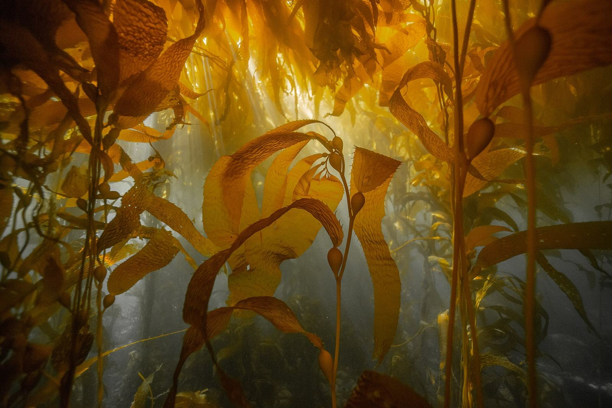

Giant kelp can grow up to 60 cm in a day, built almost entirely from carbon dioxide and water.
Kelp has no roots to feed it and no soil to grow in. Yet it can build a body taller than a ten-storey building in one season. This page follows the matter and the energy that go into it.

A forest under the sea
Giant kelp is a brown seaweed that grows in cool, shallow seas. It grips a rock with a root-like holdfast. From there, it grows up toward the light, held up by small gas-filled floats.
Kelp is a producer: it makes its own food. It does this by photosynthesis, using light energy to build sugar.
Photosynthesis happens inside chloroplasts, small parts of the cells in a kelp blade. In good conditions, a giant kelp can grow up to about 60 cm in a day. A more typical day is closer to 30 cm.
Growth rates: PLC lesson materials and Oceana's Marine Life Encyclopedia (about 28 cm a day on average, about 61 cm in ideal conditions).
Where does a plant's mass come from?
In the early 1600s, the Flemish scientist Jan Baptista van Helmont asked the same question about trees. He planted a willow shoot in a pot of dried soil and gave it only rainwater for five years.
| Measurement | At the start | After five years |
|---|---|---|
| Willow | 5 pounds | about 169 pounds |
| Dried soil | 200 pounds | 200 pounds, less about 2 ounces |
From van Helmont's own account, published after his death in 1648. One pound is 16 ounces. He did not weigh the leaves that fell each autumn.
Van Helmont decided the wood came from water alone. He was half right. Later scientists showed that most of a plant's dry mass comes from carbon dioxide in the air. Water supplies the hydrogen. Kelp does the same thing, but takes its carbon from the seawater around it.
Many students think plants get their mass from soil. Soil supplies only small amounts of nutrients, such as nitrogen. Most of a producer's mass is carbon that came from carbon dioxide.
Inputs and outputs
Photosynthesis takes in carbon dioxide and water. Using energy from light, it rearranges their atoms into sugar and oxygen.
Count the atoms on each side. Six carbon, twelve hydrogen and eighteen oxygen atoms go in, and the same atoms come out. No atom is made or destroyed. Light is not an atom, so it adds no mass.
Light does supply energy. Glucose and oxygen together store more chemical energy than the carbon dioxide and water did. That difference came from the light. This is how photosynthesis turns light energy into stored chemical energy.
In seawater, most of the carbon is dissolved as bicarbonate, not as carbon dioxide. Kelp blades take it in and turn it into carbon dioxide inside their cells.
Sort the inputs and outputs
Follow one carbon atom
The Simulations Hub has a model that follows one carbon atom through a kelp forest. It uses bull kelp, a close relative of giant kelp that does the same chemistry.
Open Tracking a Carbon Atom (opens in a new tab). Work through stage 1, "In seawater", and stage 2, "Photosynthesis". In stage 2, check the atom count on both sides of the equation, and read the energy card. Then come back and answer the question below.
The simulation was adapted from an original by Ms. Michelle Lee, SAS General Biology. Its stage 2 close-up names the steps inside the chloroplast. You do not need those steps for this lesson.
Kelp and the air
Every producer on Earth, on land and at sea, takes in carbon and gives off oxygen. Scientists have estimated how much carbon producers take up each year.
| Where | Billion tonnes of carbon |
|---|---|
| Land producers | 56.4 |
| Ocean producers | 48.5 |
| Total | 104.9 |
Source: Field and others, 1998, Science 281: 237 to 240.
Most ocean producers are tiny floating algae, not kelp. Kelp forests cover a small part of the ocean, but they are among its fastest-growing places. Together, the ocean's producers help pull carbon dioxide out of the air and add oxygen to it.
Photosynthesis is the reverse of the cellular respiration you met in Lesson 1-1. Respiration breaks sugar down with oxygen and releases carbon dioxide, water and energy.
Many students think plants photosynthesise and animals respire. Plants and kelp respire too, day and night, to power their own cells. In daylight, photosynthesis runs faster, so they take in more carbon dioxide than they give off.
A producer's matter comes from carbon dioxide and water. Its energy comes from light. Photosynthesis stores that light energy as chemical energy in sugar.
Use a model
Use the equation, Table 1 or the simulation in your answer. A strong answer keeps matter and energy apart.
Prompt: A kelp blade grows by 60 cm in one day. Explain where the matter in the new blade came from, and where its energy came from.
- Inputs (1 mark): You name carbon dioxide (or dissolved carbon) and water as the inputs.
- Matter (1 mark): You explain that the carbon atoms in the new blade came from carbon dioxide, not from the rock or soil.
- Energy (1 mark): You explain that light supplied the energy, which is now stored as chemical energy in sugar.
- Evidence (1 mark): You use the atom count, van Helmont's soil, or the simulation to support your answer.